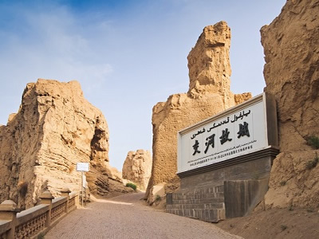

新疆絲路行
交河故城

因河水分繞城下，故稱交河，是西域36國的“車師前國”的都城，是政治、經濟、軍事和文化中心。
吐魯番的乾燥少雨的氣候，使故城保存完整，建築全部由夯土版築而成，形制布局似唐代長安城。城內市井、官署、佛寺、佛塔、街巷，以及作坊、民居、演兵場、藏兵壕、寺院佛龕中的泥菩薩都還能找到。
從空中俯視，交河故城像一片大柳葉，被譽為“世界上最完美的廢墟”。交河城30米高，分東門、南門，南門地勢險要，有“一人守隘，萬夫莫向”的山崖。
天山天池風景區

這是一座200餘萬年以前第四紀大冰川活動中形成的高山冰磧湖，其北岸的天然堤壩就是一條冰磧壟。
湖面呈半月形天然的高山湖泊，瑤池西王母神話以及宗教和獨特的民族民俗風情為文化內涵，融森林、草原、雪山、人文景觀為一體，風光別具一格。
湖水清澈，晶瑩如玉。四周羣山環抱，綠草如茵，野花似錦，有「天山明珠」盛譽。挺拔、蒼翠的雲杉、塔松，漫山遍嶺，遮天蔽日。
火焰山

古書稱之為「赤石山」，蒙古語稱「烏蘭哈達」，山體由紅色砂岩構成，夏季氣候乾熱。
是天山東部博格達山坡前山帶短小的褶皺低丘。火焰山因吳承恩著名小說《西遊記》而名聞天下。關於火焰山的名稱，古書稱「赤石山」，維吾爾語稱「克孜勒塔格」，意即紅色的山。
火焰山的故事流傳至今，悟空如何大鬧天空，踢翻太上老君的煉丹爐，火炭從天而降，在吐魯番燒出傳說中的「八百里火焰」，形成四周圍寸草不生的火焰山。
喀納斯湖

由高山、河流、森林、湖泊、草原等自然景觀、蒙古西征軍點將台、古代巖畫等文化遺蹟。
有駝頸灣、變色湖、卧龍灣、觀魚台等景點，具有旅遊觀光、自然保護、科學考察和歷史文化價值。
三大奇觀，一是千米枯木長堤，是因喀納斯湖中的浮木被強風吹着逆水上漂，在湖上游堆聚而成；
二是湖中巨型“水怪”，將在湖邊飲水的馬匹拖入水中，多了幾分神秘色彩，有人認為是當地特產的一種大紅魚（哲羅鮭）在作怪；三是雨過天晴時的奇景——喀納斯雲海佛光。
坎兒井

坎兒井，是“井穴”的意思，早在《史記》中便有記載，時稱“井渠”，而新疆維吾爾語則稱之為“坎兒孜”。
為荒漠地區一特殊灌溉系統；起源於的波斯，分布地域以伊朗高原為中心，東至中國新疆，西至摩洛哥。
坎兒井的結構，大體上是由豎井、地下渠道、地面渠道和“澇壩”（小型蓄水池）四部分組成
人們利用山的坡度，巧妙地創造了坎兒井，引地下潛流灌溉農田。坎兒井不因炎熱、狂風而使水分大量蒸發，因而流量穩定，保證了自流灌溉。